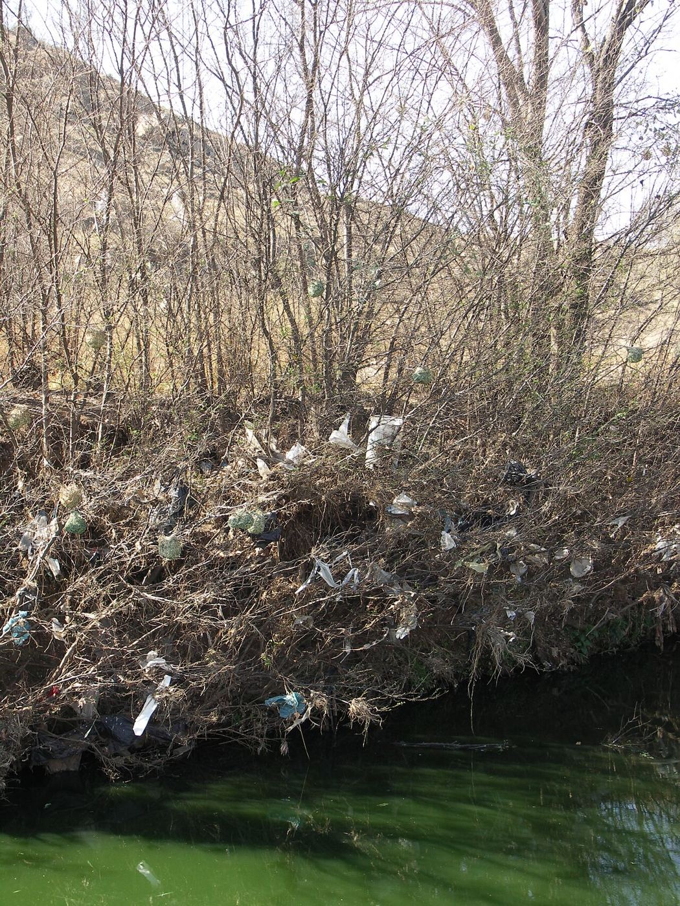
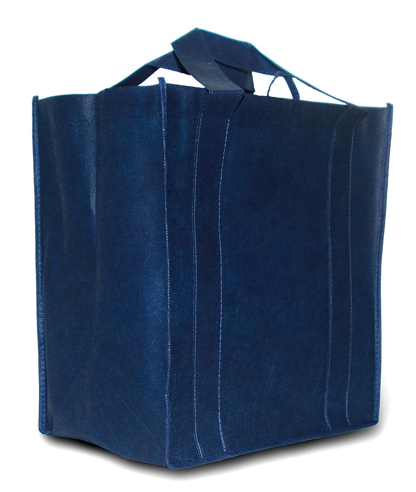
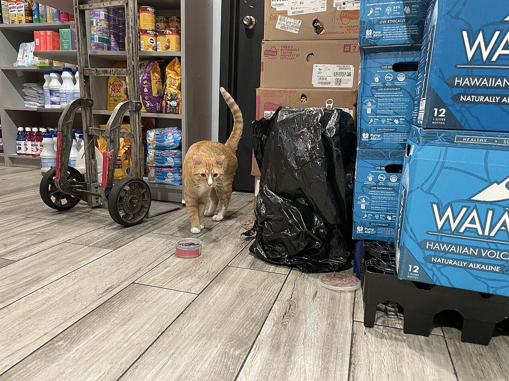

New York banned plastic checkout bags in 2020. Whether a bag actually ends up in a tree depends on more than the law: a fine, a 5¢ fee, a bodega owner's margins, and a shopper's habits all decide what happens at the register.
Chris Ho · Oregon State University · Activity 1.3
Before 2020, New Yorkers used more than 23 billion plastic bags a year (NYS DEC). Bags clog storm drains, tangle in trees and waterways, and jam the sorting machines at recycling plants. In 2019 the state legislature passed the Bag Waste Reduction Act, which banned most single-use plastic carryout bags starting March 1, 2020. It also let each county and city decide whether to add a 5¢ fee on paper bags.
This case is a good example of institutional influence because the same formal rule landed very differently depending on the informal rules around it. A supermarket chain with a compliance department switched almost overnight. A corner bodega facing paper bags that cost roughly eight times more per bag kept handing out plastic. A shopper who already carried a tote barely noticed the change. The environmental outcome, fewer bags overall but uneven compliance, comes from the interaction between laws, enforcement capacity, business economics and everyday habit.
How do New York's formal bag rules and the informal norms of shoppers and small-business owners interact to decide whether single-use bag use actually falls?
Governor Cuomo signs a bill blocking New York City's own 5¢ bag fee one day before it starts, calling it "deeply flawed." State preemption overrides local home rule.
Cuomo creates the NYS Plastic Bag Task Force, chaired by DEC Commissioner Basil Seggos, to study statewide options.
The legislature passes the Bag Waste Reduction Act in the state budget. Counties and cities get to choose whether to charge 5¢ for paper.
The ban takes effect, but a lawsuit by bag maker Poly-Pak and bodega groups pauses enforcement.
After Poly-Pak loses in Albany County Supreme Court, DEC begins enforcing.
Advocates (Beyond Plastics, NYPIRG) document hundreds of violating stores and send lists to DEC. Fines total about $75,000.
A University at Buffalo survey cited by DEC finds 85% of residents usually bring a reusable bag.
Institutions are the "rules of the game" that structure behavior. Formal institutions are written down and backed by an authority: laws, fines, fees. Informal institutions are unwritten but just as real: norms, habits, and the shared expectations of a business network. My concept map from Activity 1.1 places the formal rules on the left, informal ones on the right, and the behaviors they pull on in the middle.

Drawing on my annotated sources and stakeholder analysis (Activity 1.2), these are the actors who turn the rules into real outcomes. Blue edges mark formal rule-makers and enforcers, green marks informal or civil-society actors, and yellow marks the people whose daily choices the rules target.
Wrote the ban, the fine schedule and the local fee option. First blocked NYC's fee, then went statewide.
Issues regulations, inspects stores, sends warnings and fines. Its capacity sets how credible the ban is.
Choose whether to charge 5¢; spend their 2¢ share on free reusable bags.
Track violators, file complaints, and lobby DEC and legislators. They are the "eyes" DEC lacks.
Sued alongside Poly-Pak in 2020 and argues paper is unaffordable for thin-margin stores.
Most large chains complied quickly; Family Dollar became the biggest fine at $26,650.
Bring a bag, pay 5¢, or ask for plastic. Small daily choices that add up to 23 billion.
The ban assumes stores will switch to paper. For a bodega, that switch is expensive. The Bodega and Small Business Association reported a box of 400 paper bags costs $50–55, while a box of more than twice as many plastic bags costs about $12. Since the 5¢ fee goes to the government rather than the store, nothing offsets the difference. Paired with rare inspections, the informal calculation inside bodega networks became "keep the plastic and risk the fine." In 2020 the association's founder said: "We are taking the chance on giving out plastic bags, risking getting a fine, because paper bags are too expensive."

DEC did not inspect stores at random at any large scale. By late September 2022 it had made 425 store visits statewide, roughly four a week, while losing staff over the previous decade. In practice, enforcement was driven by complaints: advocates spotted plastic, reported it, and DEC followed up. That makes a balancing feedback loop. More violations lead to more complaints, which lead to more enforcement, which lead to fewer violations. The loop works (Gristedes stopped after DEC referred complaints to the Attorney General), but it is only as fast as volunteer attention and agency capacity allow. Outside NYC, where compliance was already better, the loop barely needs to run.
The 5¢ fee only works on a shopper who notices it, and it works best when there is an easy alternative. The law routes 2¢ of every fee to buying reusable bags for low-income residents, and exempts SNAP and WIC users from the fee itself. Over time, carrying a tote became the informal norm: by 2025, 85% of New Yorkers said they usually bring one. Here the formal price signal and the informal peer expectation reinforce each other instead of conflicting.
The clearest pattern I noticed is that a formal rule only works where informal institutions already point the same way, or where enforcement is strong enough to override them. Supermarket chains complied quickly because their internal compliance culture treats a state law as non-negotiable. Bodegas did not, because their informal network weighed an eight-fold jump in bag costs against a fine that rarely came. The same law produced two very different behaviors.
Institutional structures shape individual action mostly by changing what a choice costs at the moment it is made. The 5¢ fee is tiny, but it appears at the register, right when a shopper decides. The fine is much larger, but it is distant and uncertain for a store owner. Collective action works the same way: advocates became the enforcement system the state could not fully staff, and their complaints are what made the feedback loop turn.
I also noticed that the institutions changed each other over time. The state blocked New York City's fee in 2017, then adopted a statewide ban two years later but handed the fee decision back to localities, producing a patchwork map.
I see three leverage points. First, close the cost gap for small stores, for example by letting them keep part of the paper fee or by buying paper in bulk through the business associations they already trust. Second, make enforcement less dependent on volunteers by funding DEC inspections in the neighborhoods with the most complaints. Third, invest in the habit itself, since a shopper who always carries a bag no longer needs any rule at all.